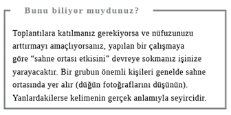

İş gününüz
İŞE GİTMEK İÇİN her gün yol almaktan nefret ediyorsanız, işiniz moralinizi bozuyor, iş arkadaşlarınız sinirinizi zıplatıyorsa yanıt köklü çözümlerde yatıyor olabilir. Ancak yine de stresi ve gerginlikleri günlük rutinden çıkarmak için yapabileceğiniz pek çok şey var. İşe gidiş yolunu kafanızı toplamak ya da biraz egzersiz yapmak için kullanmanız, zamanı (özellikle de e-posta gelen kutunuzu) daha iyi idare etmeniz, iş arkadaşlarınızla ilişkinizi geliştirmeniz ve enerji seviyenizi yüksek tutmanız işinizi daha tatminkâr ve daha az sinir bozucu hale getirebilir.
İşe Gidiş
Otobüs ya da tren yolculuğu dışında bir çareniz yoksa işe gidiş şekli konusunda fazla bir seçeneğiniz olmayabilir. İşte biraz esnekliği olanlar için birkaç öneri…
Yürüyüş mü, bisiklet mi?
Bisiklet bir taşla iki kuş vurmak için harika bir yöntem. Hem işe trafik keşmekeşini yaşamadan gidersiniz hem de egzersiz yapmış olursunuz. Yakacağınız kalori miktarı ne kadar eforla bisiklet sürdüğünüze ve kaç yokuş tırmandığınıza bağlı ama 15 dakika boyunca düz zeminde 16 km/s yol alarak yaklaşık 90 kalori yakabilirsiniz. İşe yakın oturuyorsanız 30 dakika canlı adımlarla yürüyerek yaklaşık 160 kalori yakabilirsiniz. Yürüyüşün keyfi kask ya da far gibi şeylere ihtiyaç olmamasında yatıyor. Hem bisikletinizi nereye bırakacağınız ya da çalınması, zarar görmesi konusunda endişelenmenize de gerek kalmaz. Üstelik yürüyen insan daha kolay düşünebilir, bisikletçiler gibi dikkatlerini agresif sürücülerden sakınmaya odaklamak zorunda kalmaz. İşe giderken yürüyüş temposu tutturmak veya işten dönerken gevşemek için iPod’unuzda sevdiğiniz müzikleri dinleyebilirsiniz. Ben Londra merkezinde işe hem bisikletle hem de yürüyerek gitmeyi denedim: iPod ve bisiklet iyi bir kombinasyon değil. Bisikletçilerin, özellikle de ölümcül ya da ciddi bisiklet kazalarının yüzde 75’inin yaşandığı kentsel alanlarda dikkatlerini dağıtmamaları gerekiyor. Hem bisikletle şemsiye de kullanılamıyor.
Yanıt: Yürüyüş
Bisiklete kasklı mı binmeli, kasksız mı?
Bisikletçilerin kask takıp takmamaları konusunda pek çok tartışma yaşandı. Takılmasına karşı olanlar, kask takanların kendilerini daha güvende hissettikleri için daha çok risk aldıklarını ya da kaskın insanı henüz baştan bisiklete binmekten vazgeçirerek, çevre ve sağlığa olan yararları ortadan kaldırdığını ileri sürüyorlar. Ancak konu, ölüm ve kafa yaralanması riskine geldiğinde, kanıtlar gayet net. Cochrane Collaboration’ın sistematik çalışmaları bisiklet kaskının kafa yaralanması riskini yaklaşık yüzde 69, ölüm riskini ise yaklaşık yüzde 42 oranında azalttığını gösteriyor.
Yanıt: Kasklı

İş Yerinde
Ne iş yapıyor, nerede çalışıyor olursanız olun, sizin de sabahları ilk işiniz, bilgisayarınızı açıp karşınızda e-postalarla dolu bir gelen kutusu bulmak olabilir. E-postaları idare etmek artık etkin çalışmanın ve iş yoğunluğunun stresinden kaçınmanın anahtarı haline geldi. David Allen ve Emma Donaldson-Fielder gibi psikologların önerisine göre gelen kutusunu boşaltmanın birkaç altın kuralı var:
l Silin: Postayla adresinize gelen her şeyi saklamadığınıza göre, e-postaları niye saklayasınız? İnsanın hiç okumadan silebildiği e-postaların sayısı gerçekten hayret verici olabiliyor.
l İki dakika kuralına uyun: İki dakikadan uzun sürmeyecekse hemen yanıtlayın.
l Dosyalayın: Tekrar bakmak istediğiniz e-postaları “sonra cevaplanacaklar”, “cevaplanacaklar” ya da “beklemede olanlar” (örneğin, yanıtlamak için başkasından bilgi bekledikleriniz), “CV’ler”, “davetler” gibi başlıklar altındaki klasörlere koyun. Şimdiye kadar yapmadıysanız, e-postalarınızı nasıl idare edeceğinizi düşünün ve kendi klasör sisteminizi oluşturun. Klasörleri sonradan kontrol etmeyi unutmayın ve bunu düzenli olarak yapmak için vakit ayırın.
l Üyelikten çıkın: Gelen kutunuz üye olduğunuz ama hiç okumadığınız gazete haberleri veya güncellemelerle doluysa onlara neden hâlâ üyesiniz? Üyelikten çıkmak sadece birkaç saniyenizi alacaktır (bkz. yukarıdaki iki dakika kuralı).
ya da...
l …Twitter’a geçin. Gazetelere ve güncellemelere giden bağlantıları orada bulabilirsiniz. Böylece bilgisayarınız tıkanmaz, siz çok daha hızlı beslenirsiniz ve istediğiniz bir şeyi dilerseniz yeniden tweet’lersiniz.

E-posta mı, sohbet mi?
E-posta icat edilmeden önce insanlar ne mi yapıyordu? Konuşuyordu. Bazı ofislerde çalışanlar artık yan yana otursalar da sadece e-postayla iletişim kuruyorlar. Muhtemelen gelen kutularını kontrol etmekten konuşmaya fırsatları olmuyor. Benim tecrübeme göre bu tip yerler mutlu iş ortamları değil. İskoçya’da yapılan bir çalışmaya göre bazı insanlar e-postalarını saatte 30-40 defa kontrol ediyor ve bazı şirketler çalışanlarını birbirleriyle konuşmaya teşvik etmek veya gelen mesajlarla dikkatlerinin dağılmasını önlemek için belli saatlerde e-postayı yasaklıyor. Elbette ki kimse birkaç dakikada bir meslektaşlarının sorularıyla rahatsız edilmek istemez. Ayrıca söylenenlerin kaydını tutmanız gerekiyorsa e-posta yararlıdır. Ama e-postadan uzak durmak için de çeşitli nedenler mevcut. Örneğin, yazılı mesajdan ses tonunu ayırt etmek zordur. Siz mesajınızın tonunun ağır olmadığını düşünebilirsiniz ama okuyan kişi farklı görüşte olabilir. Sorunuzu yüz yüze ya da telefonda sorarsanız, doğrudan yanıt alma ihtimaliniz çok daha yüksek olacak, talebiniz gelen kutusunda öylece beklemekten kurtulacaktır. Konuşma ayrıca başkalarını önemli aşamalarda devre dışı bırakan uzun yazışma zincirlerini ya da herkesin “tümünü yanıtla” seçeneğiyle e-posta sayısını iyice arttırmasını da engeller. Birkaç kişinin dâhil olduğu karmaşık kararların alınma aşamasında konferans konuşmaları daha etkilidir. Ayrıca masanızdan kalkıp iş arkadaşınızın masasına ya da ofisine gitmeniz, biraz mola vermek, bacak çalıştırmak ve birbirinizi daha iyi tanımak için iyi bir fırsattır.
Yanıt: Sohbet

Zorlu e-postalar: Hemen mi yanıtlanmalı, sonra mı?
Ani bir öfkeye kapılarak ateşli bir e-posta gönderip de pişman olmamış çok az insan vardır herhalde. E-posta gönderme dürtünüzü kontrol altına almanın yollarından biri, kafanızın içinde “Bunu göndermem doğru mu?” diye soran sesi dinlemektir. Yanıt büyük olasılıkla “hayır” olacaktır. Güvendiğiniz bir iş arkadaşınıza mesajı okuyup size fikrini söylemesini isteyebilirsiniz. Ya da teknolojinin yardımına başvurarak Boomerang gibi e-postaları gecikmeli gönderebilen ve gönderdikten sonra geri alabilen bir program kullanabilirsiniz. Bunlar olmazsa biraz sinirlendiğiniz zamanlarda en ucuz ve kolay yöntem, bilgisayarınızdan uzaklaşıp sakinleştikten sonra yanıt vermenizdir. Bu yanıtın çok daha ölçülü olacağından şüpheniz olmasın.
Yanıt: Sonra

Zaman Yönetimi
Yapmanız gereken işlerin yükü altında eziliyorsanız, onları idare edilebilir parçalara bölün. Rus psikolog Bluma Zeigarnik’in 1920’lerde ortaya koyduğu üzere işe bir kez başladıktan sonra beyin onu yeniden anımsamaya daha yatkındır, dolayısıyla hiç başlamamış olduğumuz zamana kıyasla onu tamamlama olasılığımız daha yüksektir. Bu da akla iş dünyası yönetiminin ünlü gurusu David Allen’ın düşüncesini getiriyor: “Bütün dert, yapılması gerektiğine inandığınız bir şeyi yapmamış olduğunuz zaman başlar.” İşte psikologların iş yükünü yönetme konusunda önerdiği üç yöntem:
l Bir liste hazırlayın. Bu tek bir büyük liste veya farklı projeler için ayrı listeler ya da aşağıdaki acil/önemli matris formatına göre olabilir.
l Öncelik belirleyin: İşleri dört kategoriye ayırın: Acil ve önemli, acil değil ama önemli, acil ama önemli değil ve ne acil ne önemli. Böylece neyin önce yapılması gerektiği ortaya çıkar. Eğer her şey acil ve önemli görünüyorsa daha az iş üstlenmeye ve daha çok paylaştırmaya çalışın.
l Kendinize işi vaktinde tamamlamamanız halinde en kötü ne olabileceğini ve öyle bir durumda başarısızlığınızla nasıl başedeceğinizi sorun. Bu, sakinleşmenize ve duruma bir perspektif kazandırmanıza yardımcı olacaktır.

Mükemmeliyetçi mi, kanaatkâr mı?
Elinizden gelen her şeyi yapmak istemeniz, övgüye değer bir özelliktir. Ancak mükemmeliyetçilik aşırıya vardırıldığında her zaman başarının reçetesi olmaz. Bu konu üstüne çalışmalar yürüten ABD’li psikolog Profesör Randy Frost’a göre, mükemmeliyetçiler kimi zaman kendilerini gereğinden fazla eleştirebilir, kendilerinden şüphe etmenin acısı içinde kıvranabilirler. Bu kişiler genelde yüksek standartlar belirleyen ve hataları aşırı eleştiren anne babaların çocuklarıdır. İnsanın işin temposunu belirleyen ve ayrıntılara olağanüstü dikkat gösteren meslektaşlarının olması iyidir ama mükemmeliyetçiler bazen işi yavaşlatabilir, bitiş tarihlerine yetişemeyebilir, büyük resmi görmekte zorlanabilir, kararsız olabilir ve iş arkadaşlarını (ve patronlarını) çileden çıkarabilir. Bir ayrıntı yüzünden paniğe kapıldığım bir gün, başarılı eski patronum bana “En iyinin, iyinin düşmanı olmasına sakın izin verme” demişti. Bence çok sağlam bir tavsiye.
Yanıt: Kanaatkâr

Bir liste mi, birkaç tane mi?
Bu, yaşam koçları ve psikologlar arasında hararetli bir tartışma konusudur. Listeler hiç şüphesiz meşgul (ve aklı dağınık, unutkan) insanların plan yapmalarına ve öncelik belirlemelerine yardımcı olur. Peki ama tek bir uzun liste mi yoksa farklı işler için ayrı listeler mi yapmalı? Ne sıklıkta yapmalı? Nerede yapılmalı? Kâğıt üstünde mi, bilgisayarda mı, cep telefonunda mı? Zaman yönetimi uzmanı David Allen, içinde “Tatil Rezervasyonu Yap”, “İşe Yeni Eleman Al”, “Arabayı Tamire Götür” gibi başlıklar bulunan bir ana listeniz olmasını ve bu başlıkların altına her işi bitirmek için gereken adımları sıralamanızı öneriyor. Allen ayrıca adımların atılacağı zamanın takibini yapabileceğiniz, kolayca güncellenebilen dijital takvimleri de seviyor. Elektronik aygıtta liste yapmanın avantajı, hareket halindeyken (örneğin, tren istasyonunda beklerken, otobüste otururken) listeyi kalem kâğıda kıyasla daha kolay güncelleyebilmenizdir. Çoklu liste yapanlardansanız çok sayıda kâğıda yayılmış listelere kıyasla bunları kaybetme olasılığınız daha düşüktür. Ancak birden fazla listenin sorunu takip etme zorluğudur.
Liste yapmayı yararlı buluyorsanız, bunu kendinize en uygun amaçla yapın. Örneğin, işleri vaktinde yapmaya yarayacak gerçek bir yardımcı olarak... Gerçek bir liste meraklısı olarak size iş için bir orta yol önerebilirim: Her hafta yeni bir Yapılacak İşler Listesi hazırlayın ve öncelikli maddeleri vurgulayın (bkz. Zaman Yönetimi) ya da işin hangi güne kadar tamamlanması gerektiğini not alın. Tamamlanamayan işleri bir sonraki haftanın yeni listesine aktarabilirsiniz.
Yanıt: Bir tane

Hep dikkat odaklı mı olmalı, arada hayallere dalmalı mı?
Aynı zorlu işe uzun bir süre odaklandıktan sonra “Resmen beynim acıyor” dediyseniz, bilin ki çok yanılmış sayılmazsınız. Jonah Lehrer gibi nörobilimciler, beynin rasyonel karar alma kısmının aşırı kullanım durumunda tükendiğini düşünüyor. Dolayısıyla “düğmeleri kapatmak” ve hayallere dalmak, beynin farklı bölümlerinden gelen düşünce ve fikirleri birleştirmeyi ve daha yaratıcı düşünmeyi sağlayabilir. İşte boş boş pencereden dışarı bakarken ya da bulaşıkları yıkarken zaman zaman “Evreka” anları yaşamamızın nedeni de budur. Tabii bunu bütün gün yapmayın.
Yanıt: Hayallere de dalmalı

Görev dağıtımı mı, kendi işini kendin yap mı?
İnsanlardan çok daha fazla iş yaptığınızı düşünerek içerlediğiniz oluyor mu? İşteki görevinize başkalarını idare etmek de dâhilse daha etkin görev dağılımı yapmayı öğrenmeniz gerekebilir. İki dakikada tamamlayamayacağınız işler (yönetim uzman David Allen’ın kuralına göre) başkasına devredilebilir ya da ilgilenecek vakit bulana kadar ertelenir. Görev dağıtımı yapıyorsanız, iş arkadaşlarınızın kendilerinden ne beklediğini net bir şekilde anlamalarını sağlayın ve işin takibini yapma konusunda onlarla anlaşın ya da aklınızın köşesine not alın. Büyük organizasyonlar söz konusu olduğunda her departmanın kimden ne beklendiğini özetleyen çevrimiçi bir doküman hazırlaması faydalı olabilir. Haftanın sonuna gelindiğinde herkes gerçekte ne yaptığını yazar. İyi yapılmış bir işi takdir ettiğinizi göstermenin veya iyi olmadığında geri bildirim yapmanın, görev dağıtımı becerinizi geliştireceğini tahmin etmek için uzman olmanız gerekmez.
Yanıt: Görev dağıtımı

Toplantı mı, bağımsız çalışma mı?
Ofis hayatının e-postalarla uğraşmaktan daha fazla vakit tüketen bir yanı varsa o da toplantılardır. Bazı günler tamamen toplantıyla geçer ve iş yapmaya çok az vakit kalır ki bu da insanda gerilim ve sıkıntı yaratabilir. Peki, iki elin her zaman sesi var mı? Beyin fırtınası üstüne yapılan ilginç bir çalışma bunun aksine işaret ediyor. Yapılan deneyler, kendi başına çalışanların gruplar halinde çalışanlara kıyasla daha kaliteli fikirler ürettiğini gösteriyor. “Toplantıları sevenler iş bitirmekten hoşlanmayanlardır” diyor psikoloji yazarı Oliver Burkeman, Help! How to Became Slightly Happier and Get a Bit More Done / İmdat! Nasıl Biraz Daha Mutlu Olunur ve Biraz Daha Çok İş Yapılır adlı kitabında. Bu durumun “seyirci etkisi” yüzünden gerçekleştiği düşünülüyor: Çünkü grup içindekiler sonuçları tek başına çalışanlara kıyasla daha az önemsiyor, tek çalışanlar ise sonuçlardan tamamen kendilerinin sorumlu olduğunun farkındalar.
Toplantının amacı katılımcıları gidişattan haberdar etmekse bu e-posta ya da telefonla daha etkili bir biçimde yapılamaz mı? Şüphesiz ki iyi idare edilmiş bir toplantı son derece verimli olabilir. Üstelik genelde internet ve telefon aracılığıyla iletişim kurduğumuz şu zamanda, iş arkadaşlarımızla yüz yüze görüşmek de önemlidir: Bize bir ekibin parçası olduğumuzu hatırlatır.
Yanıt: Bağımsız çalışma

Evet mi demeli, hayır mı?
İş yükü yüzünden kendinizi gergin ve sinirli hissediyorsanız ya da geceleri uykunuz bölünüyorsa gereğinden uzun zamanı, gereğinden fazla insanı memnun etmeye çalışarak geçiriyor olabilirsiniz.

Psikologlar bu tür davranışların kökeninin çocuklukta yattığına inanıyor. Anne baba çocuğu sıkı kontrol altında tutarsa ve sadece kendine söyleneni yaptığı zaman sevildiğini hissettirirse çocuk kendi adına ne istediğini bilemeden büyür ve başkalarından onay bekler. Hatta kişisel gelişim yazarı Elizabeth Hilts yüzleşme korkusundan kaynaklanan ve “zehirli kibarlık” adını verdiği (genelde kadınlara özgü) bir özellik tanımlar. Bu insanlar iş yerinde iş arkadaşlarını memnun etmek için her şeye “evet” derler ve fazla sorumluluk üstlendikleri için de genelde sözlerini tutmakta başarısız olurlar.
Memnun etmeyi sevenler başkalarının arzu ve taleplerine uyar ama kaldıramayacak duruma geldiklerinde de patlarlar. İnsanların ihtiyaçlarına karşı duyarlı olmak elbette ki önemlidir ama bedeli kendi ihtiyaçlarınız olmadığı sürece. Hilts bu durumda “içinizdeki şirret”le temasa geçmenizi bile öneriyor. Kişisel gelişim organizasyonu Life Clubs’ın kurucusu Nina Grunfeld iki sütunlu bir liste yapın diyor. Sol sütunun başlığı “Bunlara hayır diyorum” sağ sütunun başlığı ise “Demek ki bunlara evet diyorum” olsun. Bu önceliklerinizi belirlemeniz ve patronunuza gönülsüz görünmemeniz için iyi bir tekniktir: “Kusura bakmayın toplantıya gelemeyeceğim ama istediğiniz raporu bu akşama yetiştirebileceğim.”
Yanıt: Hayır demeli (kibarca)
UZMAN GÖRÜŞÜ
“Yaptığınız şeyle ilgili kendinizi iyi hissetme dereceniz, ne yapmadığınızı bilme ve bununla barışma derecenize eşittir.” David Allen, İşleri Halletme.

İş Arkadaşlarıyla Geçinme
İtiraf edelim ki hepimizin “kafaca uyuşmadığı” bazı iş arkadaşları vardır. Ama bu mutlaka cephe almamız gerektiği anlamına gelmemeli.
Başkalarını mı suçlamalı, takılmadan devam mı etmeli?
İş yerinde bir şeyler ters gittiğinde sorunun kaynağı olarak gördüğünüz meslektaşlarınıza kızmanız doğal. Peki, bu gibi durumlarda karşınızdakini suçlamalı mı yoksa sessiz mi kalmalısınız? Başkalarını suçladığınızda kendinizi incinmiş durumuna koyar, kurban gibi gösterirsiniz. Örneğin, paylaştığınız masa dağınıksa ve bunun için masayı paylaştığınız iş arkadaşınızı suçluyorsanız, karşınızdakini sizi üzen pozisyonuna koymuş, o kişiye ilişkide güç vermiş olursunuz. Sonra da size bunu yapmasına “izin verdiğiniz” için kendinizi suçlayabilirsiniz. Oysa kendini suçlamak vakit kaybından başka bir şey değildir. Nina Grunfeld bir konuda kendinizi kötü hissediyorsanız, kendinizi affetmenizi ve hayatınıza devam etmenizi öneriyor. Söz konusu şeyi “yanlış” yapmış olmaktan ne öğrenebileceğinizi sorun kendinize. Belki dağınık masa gibi bir durumda kendinizi daha fazla kontrol sahibi hissetmek için, dağınıklığı birlikte düzelteceğiniz haftalık bir toplama seansı önerebilirsiniz.
Yanıt: Takılmadan devam etmeli

Özür mü dilemeli, hiçbir şey söylememeli mi?
Hepimiz hata yaparız ve kimsenin fark etmeyeceği türden olanlara dikkat çekmenin anlamı da yoktur. Ancak söz konusu ciddi bir hataysa hiçbir şey söylememek, küstahça ve çocukça görünebilir; tıpkı yaptığıyla yüzleşemeyen bir çocuk gibi. Öte yandan kulağa samimiyetsiz gelen geçiştirme bir “özür” de durumu iyice kötüleştirebilir. Maryland Üniversitesi’nden ABD’li psikologların yürüttüğü bir çalışma, özrün üç çeşidi olduğunu ortaya koydu: Telafi (“Özür dilerim, o raporu hazırlamayı unuttum. Mesaiye kalıp yapacağım”); empati (“Kusura bakma toplantıya çağırmadım seni. Fikrine değer vermediğimi düşünmüş olabilirsin ama öyle değil”) ve ihlal edilen kurallar/normların kabullenilmesi (“X’e şirket evliliği teklifinden söz ettiğim için özür dilerim. Gizliliği ihlal etmiş oldum”).
İşin püf noktası hata yapılan tarafı doğru türde özürle eşleştirmek. Örneğin, ilişkilere değer veren biri muhtemelen empati dolu özre daha iyi tepki verecektir. Özürde samimi olduğunuzu gösterme açısından üç çeşidin karmasına başvurmanız daha etkili olacaktır. Yapılan çalışmalar özrü dileyip aradan çıkarmanın iyi olduğuna işaret ediyor. Ertelemeden, vakitlice özür dileyenler insanlara sempatik görünüyor.
Yanıt: Özür dilemeli

Kararları kabul mü etmeli, değiştirmeye mi çalışmalı?
Üst kademeden benimsemediğiniz, sıkıntı veren bir karar geldiğinde başınızı öne eğmek mi yoksa itirazınızı dile getirmek mi daha iyi? Muhtemelen kendinize, durum üstünde gerçek anlamda ne derece etkiniz olduğunu sormanız en iyisi olacaktır. Yeni bir patrona, yeniden yapılanma sürecine ya da işten çıkarmalar gibi kontrol edemediğiniz şeylere üzülmeniz, akıl dağıtıcı ve anlamsız olabilir. Hoşunuza gitmeyen kararlara hep bu şekilde tepki veriyorsanız, çok geçmeden kendisi de hoşlanmadığı kararları uygulayan müdürlerinizin gözünde itibarınızı yitirebilirsiniz. Gerçekten etki edebileceğiniz bir şey varsa o da duruma vereceğiniz tepkidir. Örneğin, yapılacak değişikliklerin uzun vadede sizin için daha iyi olduğunu düşünebilirsiniz. İyimserlerin aksiliklerle başetmede daha iyi oldukları görüşünü destekleyen çok sayıda araştırma mevcut. Olumlu bakış açısı bağışıklık sistemini de etkilediğinden büyük olasılıkla bu kişiler aynı zamanda daha sağlıklılar. Değişime direnenler genelde kaygılı kişilerdir. Kendinize sizi korkutan şeyin ne olduğunu ve kontrolü yeniden kazanmak için ne gibi adımlar atabileceğinizi sorun. Yeni bir iş aramak, CV’nizi güncellemek ya da LinkedIn gibi bir paylaşım sitesinde mesleki profil oluşturmak, bu adımlardan birkaçı olabilir.
Yanıt: Kabul

Dedikodu mu yapmalı, sessiz mi kalmalı?
İş yerinde olup bitenlerle ilgili son dedikodular elbette ki sıkıcı bir güne neşe katabilir ama dedikodunun kaynağı olmamaya dikkat edin. Bir dedikodudan şüphe duyup sizin arkanızdan da böyle konuşulup konuşulmadığını düşündüyseniz, bunun nedeni psikologların “spontan özellik aktarımı” dedikleri şeydir. Yapılan deneyler, kişinin başkası hakkında duyduğu olumsuz şeylerin bir kısmını, farkında olmadan bunu söyleyen kişiye atfettiğini ortaya koydu. Kısacası, annemin de dediği gibi “Güzel lafın yoksa hiç konuşma daha iyi.”
Yanıt: Sessiz kalmalı
Çay ve kahveyi sadece kendine mi yapmalı, herkese mi?
Kendinize alırken daima iş arkadaşlarınıza da çay ya da kahve getirmeyi teklif eden o cömert insanlardansanız karşılığında sonsuz bir minnettarlık beklemeyin. Psikolojik deneylerin sonucuna göre yabancılar küçük iyilikleri ve nazik jestleri daha çok takdir ediyor ve genelde daha fazlasıyla karşılık veriyor. Gizli bir amaç şüphesi uyandıran iyilikler pek hoş karşılanmıyor. İş arkadaşlarınıza arada bir çay kahve getirmek şüphesiz güzel bir şeydir ama bunu çok fazla yapıyor ve karşılık vermeyenlere içerliyorsanız, acaba amacınız takdir edildiğinizi hissetmek olabilir mi?
Yanıt: Kendine